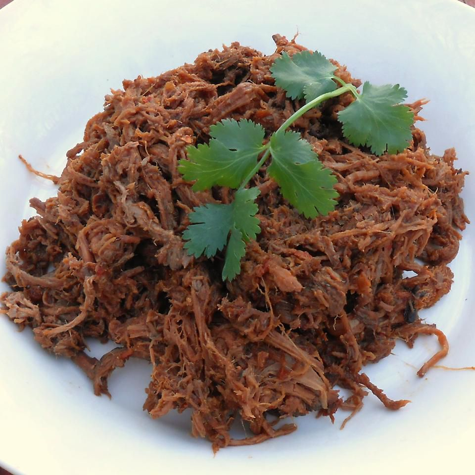

Home
Barbacoa Meat

Description
Similar to Mexican birria, barbacoa is more traditionally made from beef
cheeks, but it can also be made from various cuts of beef, or even lamb,
or goat. It really varies among the different regions of Mexico. But
here’s the gist of it – it’s heavily seasoned meat with spices and
chipotle peppers, then slow-cooked in a pit with coals or over an open
flame until you’ve got beautifully juicy, fall-apart tender meat.
Ingredients
- 3 pounds beef cheek meat
- 1 tablespoon olive oil
- 1/4 cup salt
- 2 teaspoons ground cumin
- ground black pepper to taste
- 2 cups water, or more as needed
- 1/2 yellow onion, halved and thickly sliced
- 3 gloves garlic, chopped
Steps
-
Step 1
Coat beef cheek meat with olive oil. Rub salt, cumin, and pepper into
meat. Wrap meat in aluminum foil and refrigerate, 4 hours to
overnight.
-
Step 2 Pour water into a slow cooker.
-
Step 3
Arrange onion and garlic around beef cheek meat in the aluminum foil.
Wrap foil tightly around meat and vegetables. Add a second sheet of
aluminum foil around meat mixture, sealing tightly; place in the slow
cooker.
-
Step 4
Cook on Low, adding more water if it has evaporated, until meat is
very tender, 7 to 8 hours. Remove foil packet from slow cooker and
shred meat using 2 forks.